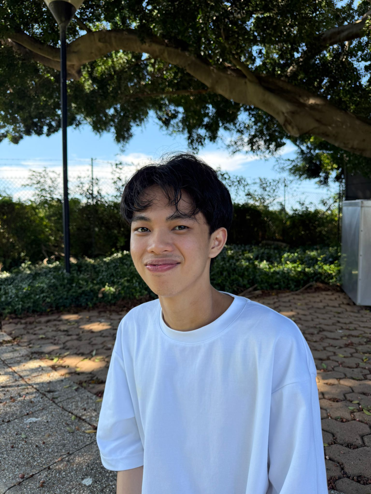

Nathan Matthew Wijaya
Fourth-year Mechatronics Engineering student at the University of Technology Sydney with growing interests in robotics, automation, and practical engineering teamwork.
My academic and workplace experiences have helped me develop a strong appreciation for hands-on problem solving, collaborative technical work, and the integration of mechanical, electronic, and software systems in engineering practice.
About Me
This section introduces my academic motivation, engineering interests, and the qualities that shape my identity as an emerging engineer.
My Academic and Professional Identity
My name is Nathan Matthew Wijaya, and I am currently studying Mechatronics Engineering at the University of Technology Sydney. Over the course of my degree, I have developed an increasing interest in the practical side of engineering, especially through project-based learning, robotics work, and collaborative technical environments.
At the beginning of my studies, I was more drawn to the mechanical side of engineering. However, as I became involved in subjects that combined programming, electronics, control systems, and design, I began to appreciate the broader potential of mechatronics. This shift became even stronger after my internship experience, where I saw how different technical components are combined in real engineering problem solving.
I am especially interested in engineering roles that involve robotics, automation, and real-world project delivery. I enjoy working with others, learning through practical experience, and improving both my technical and professional capabilities over time.
Key Strengths
- Flexible team contributor who can support multiple aspects of a project.
- Strong interpersonal skills developed through both academic and workplace experience.
- Interest in practical engineering work, especially robotics and automation systems.
- Able to adapt quickly to new environments and learn from real-world situations.
- Committed to continuous improvement in both technical and professional areas.
Contact
Please feel free to contact me regarding graduate engineering opportunities, internships, or professional connections.